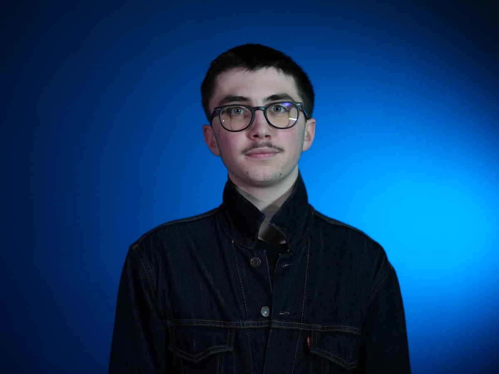

Théo Luthin
Etudiant en Informatique
Total de visites du site : 0
Visites de session : 0
À propos
Passionné par les jeux vidéo et l'informatique en général, je suis actuellement étudiant en informatique. Je cherche à développer mes compétences en programmation et en développement web afin de contribuer à des projets innovants. Je suis un étudiant intéressé par tout ce que j'entreprends, soucieux de bien faire, curieux et très motivé. Intéressé par le domaine de l'informatique, j'ai étudié notamment la NSI comme enseignement de spécialité depuis la première, ce qui me permet d'avoir un bon niveau de connaissances dans ce domaine. Depuis mon entrée à l'IUT Informatique en 2024, et jusqu'en juin 2025, je me suis perfectionné dans les différents domaines de l'informatique. Je suis actuellement étudiant en 2ème année de bachelor informatique au campus Ynov de Strasbourg.
Compétences principales
- Programmation Back-End (Java, Python, C#, SQL)
- Gestion de projets et travail en équipe
- Anglais
Expériences
-
8-12 Février 2021 :
Stage de 3ème réalisé chez Merck, laboratoire scientifique leader en sciences de la vie.
Ce stage m'a permis de connaître les différents débouchés pour ma poursuite d'études. Ma mère travaillant en tant que chef de projet informatique au sein de l'entreprise, j'ai consacré la plupart de ce stage dans son département afin de connaître les aspects de son métier, qui m'a réellement donné envie de poursuivre mes études supérieures dans ce domaine.
-
1er-31 juillet 2025 :
Travail d'été chez Euro-Information logistique
Job d'été réalisé chez Euro-Information Logistique (filière du Crédit Mutuel). Mise à jour du référentiel des systèmes de visioconférence.
Formation
- 2021 - 2024 : Baccalauréat Technologique, Lycée Pasteur, Strasbourg (Mention Assez Bien)
- 2024 - 2025 : Étudiant en Informatique, IUT d'Illkirch
- Depuis septembre 2025 : Bachelor Informatique, Ynov Campus Strasbourg